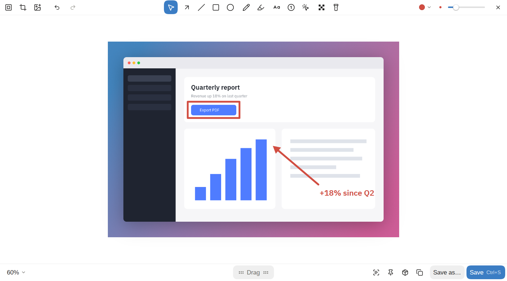

Скриншоты и запись экрана
kadr делает скриншоты и записывает экран. Можно снять область, окно или весь экран, разметить, записать видео с камерой и кликами и превратить запись в аккуратный ролик. Написан на Rust и GPUI CE. Сначала для Linux под Omarchy (Arch, Hyprland, Wayland), дальше macOS и Windows. Интерфейс на английском и русском, тёмная и светлая темы следуют системе.
Скачать Linux, macOS и Windows. Альфа.

Этот справочник описывает, что kadr умеет сейчас, экран за экраном. У каждой страницы одно устройство: зачем экран, как открыть, что на нём, клавиши, какие настройки на него влияют и какие команды его запускают. Что менялось от версии к версии, в списке изменений; куда идёт проект, в роадмапе.
Страницы
- Установка: сборки, что нужно kadr на каждой системе, хук для Hyprland.
- Съёмка: панель съёмки, выбор области, снимки окна и экрана, снимок с прокруткой, таймер, карточка после снимка, закрепление, распознавание текста.
- Редактор: разметка скриншота: инструменты, стили текста, скрытие, обрезка, фон, пресеты, сохранение.
- Запись: панель записи, микрофон и звук системы, пузырь камеры, режим студии, обрезка и GIF.
- Студия: из записи в ролик: зумы, вырезки, курсор, камера, экспорт.
- История: все снимки и записи, с поиском и фильтрами.
- Настройки: окно настроек, горячие клавиши и файл
settings.toml. - Файлы проектов: файлы
.kadr, которые хранят правку. - Командная строка: все команды
kadr. - Словарь: слова, которыми пользуются справочник и kadr.
Платформы
- Linux (Wayland, Hyprland): работает всё, здесь kadr используется каждый день.
- macOS и Windows: редактор, студия, скриншоты (в том числе окна и снимки с прокруткой), запись через системный захват, буфер обмена, уведомления, трей, глобальные хоткеи и оверлей выбора области написаны и проходят сквозной тест на раннерах CI. Камера, выбор микрофона и лог кликов и клавиш для студии пока не перенесены, и живьём там kadr никто не запускал: тестеры очень нужны.
Помощь
Ошибки и вопросы в GitHub issues. После падения в папке кэша kadr остаётся crash.log, приложите его. Разработчикам: CONTRIBUTING.md.